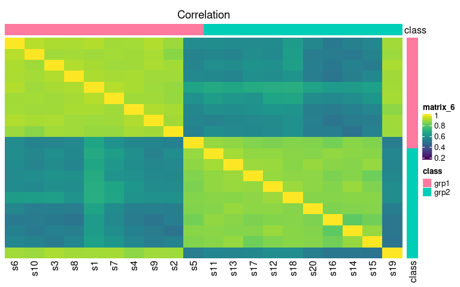
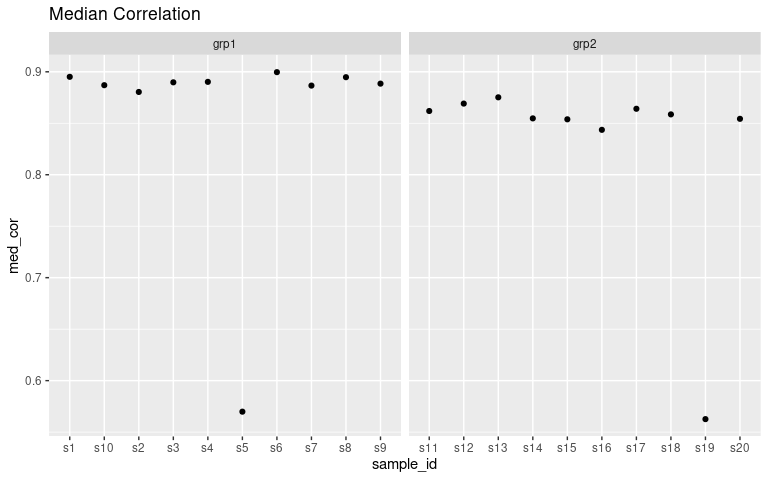

Set of useful functions for calculating various measures from data and visualizing them.
Takes a lot of inspiration from Gierlinski et al., 2015, especially the median_correlation and outlier_fraction functions.
Installation
Examples
These examples show the primary functionality. We will apply the visualizations to a two group dataset. However, all of the functions are still applicable to datasets with more than two groups. The examples below are for a dataset where there has been a sample swapped between the two groups (i.e. there is a problem!). If you want to see how the visualizations compare between a good dataset and a bad dataset, see the quality_control vignette.
library(visualizationQualityControl)
library(ggplot2)
data("grp_cor_data")
exp_data = grp_cor_data$data
rownames(exp_data) = paste0("f", seq(1, nrow(exp_data)))
colnames(exp_data) = paste0("s", seq(1, ncol(exp_data)))
sample_info = data.frame(id = colnames(exp_data), class = grp_cor_data$class)
exp_data[, 5] = grp_cor_data$data[, 19]
exp_data[, 19] = grp_cor_data$data[, 5]
sample_classes = sample_info$classVisualize PCA Component Scores
pca_data = prcomp(t(exp_data), center = TRUE)
pca_scores = as.data.frame(pca_data$x)
pca_scores = cbind(pca_scores, sample_info)
ggplot(pca_scores, aes(x = PC1, y = PC2, color = class)) + geom_point()
To see how much explained variance each PC has, you can calculate them:
| pc | variance | percent | cumulative | labels |
|---|---|---|---|---|
| PC1 | 2.0852320 | 0.6853218 | 0.6853218 | PC1 (69%) |
| PC2 | 0.0944324 | 0.0310357 | 0.7163574 | PC2 (3.1%) |
| PC3 | 0.0827594 | 0.0271993 | 0.7435567 | PC3 (2.7%) |
| PC4 | 0.0802501 | 0.0263746 | 0.7699313 | PC4 (2.6%) |
| PC5 | 0.0758842 | 0.0249397 | 0.7948710 | PC5 (2.5%) |
| PC6 | 0.0750434 | 0.0246634 | 0.8195344 | PC6 (2.5%) |
| PC7 | 0.0668954 | 0.0219855 | 0.8415199 | PC7 (2.2%) |
| PC8 | 0.0600538 | 0.0197370 | 0.8612569 | PC8 (2%) |
| PC9 | 0.0590223 | 0.0193980 | 0.8806548 | PC9 (1.9%) |
| PC10 | 0.0520022 | 0.0170908 | 0.8977456 | PC10 (1.7%) |
| PC11 | 0.0507126 | 0.0166670 | 0.9144126 | PC11 (1.7%) |
| PC12 | 0.0450374 | 0.0148018 | 0.9292143 | PC12 (1.5%) |
| PC13 | 0.0398570 | 0.0130992 | 0.9423135 | PC13 (1.3%) |
| PC14 | 0.0380927 | 0.0125194 | 0.9548329 | PC14 (1.3%) |
| PC15 | 0.0337662 | 0.0110974 | 0.9659303 | PC15 (1.1%) |
| PC16 | 0.0304897 | 0.0100206 | 0.9759509 | PC16 (1%) |
| PC17 | 0.0271052 | 0.0089083 | 0.9848592 | PC17 (0.89%) |
| PC18 | 0.0252369 | 0.0082942 | 0.9931534 | PC18 (0.83%) |
| PC19 | 0.0208322 | 0.0068466 | 1.0000000 | PC19 (0.68%) |
| PC20 | 0.0000000 | 0.0000000 | 1.0000000 | PC20 (0.0000000000000000000000000000029%) |
visqc_heatmap
Calculate sample-sample correlations and reorder based on within class correlations
rownames(sample_info) = sample_info$sample
data_cor = globally_it_weighted_pairwise_correlation(t(exp_data))
data_order = similarity_reorderbyclass(data_cor$cor, sample_info[, "class", drop = FALSE], transform = "sub_1")And then generate a colormapping for the sample classes and plot the correlation heatmap.
data_legend = generate_group_colors(2)
names(data_legend) = c("grp1", "grp2")
row_data = sample_info[, "class", drop = FALSE]
row_annotation = list(class = data_legend)
library(viridis)
library(circlize)
colormap = colorRamp2(seq(0.2, 1, length.out = 50), viridis::viridis(50))
visqc_heatmap(data_cor$cor, colormap, "Correlation", row_color_data = row_data,
row_color_list = row_annotation, col_color_data = row_data,
col_color_list = row_annotation, row_order = data_order$indices,
column_order = data_order$indices)
median_correlations
data_medcor = median_correlations(data_cor$cor, sample_info$class)
ggplot(data_medcor, aes(x = sample_id, y = med_cor)) + geom_point() +
facet_grid(. ~ sample_class, scales = "free") + ggtitle("Median Correlation")
outlier_fraction
data_outlier = outlier_fraction(t(exp_data), sample_info$class)
ggplot(data_outlier, aes(x = sample, y = frac)) + geom_point() +
facet_grid(. ~ class, scales = "free") + ggtitle("Outlier Fraction")
weighted correlations with missing values
When there are missing values (either NA, or 0 depending on the case), the default is to only include values that are not missing in both things being compared, which makes sense for NA especially, because otherwise you can’t actually calculate a correlation. However, the correlations that are calculated then don’t include the fact that data is missing. Therefore, we should be weighting the correlations to account for missing data.
Lets add some missingness to our data.
exp_data = grp_cor_data$data
rownames(exp_data) = paste0("f", seq(1, nrow(exp_data)))
colnames(exp_data) = paste0("s", seq(1, ncol(exp_data)))
make_na = rep(FALSE, nrow(exp_data))
s1_missing = make_na
s1_missing[sample(length(make_na), 20)] = TRUE
s2_missing = make_na
s2_missing[sample(which(!s1_missing), 20)] = TRUE
exp_data2 = exp_data
exp_data2[s1_missing, 1] = NA
exp_data2[s2_missing, 1] = NA
cor_random_missing = globally_it_weighted_pairwise_correlation(t(exp_data2))$cor
cor_random_missing[1:4, 1:4]
## s1 s2 s3 s4
## s1 0.6000000 0.3182274 0.3274932 0.3245317
## s2 0.3182274 1.0000000 0.8897728 0.8942302
## s3 0.3274932 0.8897728 1.0000000 0.8866482
## s4 0.3245317 0.8942302 0.8866482 1.0000000
cor_random_missing_nw = globally_it_weighted_pairwise_correlation(t(exp_data))$cor
cor_random_missing_nw[1:4, 1:4]
## s1 s2 s3 s4
## s1 1.0000000 0.8766158 0.8951214 0.8986443
## s2 0.8766158 1.0000000 0.8897728 0.8942302
## s3 0.8951214 0.8897728 1.0000000 0.8866482
## s4 0.8986443 0.8942302 0.8866482 1.0000000What happens if we make the missingness match between them? That should count as information, right? If the feature is missing in the same samples, that is worth something?
exp_data = grp_cor_data$data
rownames(exp_data) = paste0("f", seq(1, nrow(exp_data)))
colnames(exp_data) = paste0("s", seq(1, ncol(exp_data)))
exp_data[s1_missing, 1:2] = NA
cor_same_missing = globally_it_weighted_pairwise_correlation(t(exp_data))$cor
cor_same_missing[1:4, 1:4]
## s1 s2 s3 s4
## s1 0.8000000 0.8697149 0.5755509 0.5734221
## s2 0.8697149 0.8000000 0.5638509 0.5672459
## s3 0.5755509 0.5638509 1.0000000 0.8866482
## s4 0.5734221 0.5672459 0.8866482 1.0000000Here we can see that the correlations get dropped, but not as much as when it was random.
Fake Data Generation
Some fake data is stored in grp_cor_data that is useful for testing the median_correlation function. It was generated by:
library(fakeDataWithError)
set.seed(1234)
s1 = runif(100, 0, 1)
grp1 = add_uniform_noise(10, s1, 0.1)
model_data = data.frame(s1 = s1, s2 = grp1[, 1])
lm_1 = lm(s1 ~ s2, data = model_data)
lm_1$coefficients[2] = 0.5
s3 = predict(lm_1)
s4 = add_uniform_noise(1, s3, 0.2)
grp2 = add_uniform_noise(10, s4, 0.1)
grp_class = rep(c("grp1", "grp2"), each = 10)
grp_cor_data = list(data = cbind(grp1, grp2), class = grp_class)
library(fakeDataWithError)
set.seed(1234)
n_point = 1000
n_rep = 10
# a nice log-normal distribution of points with points along the entire range
simulated_data = c(rlnorm(n_point / 2, meanlog = 1, sdlog = 1),
runif(n_point / 2, 5, 100))
# go to log to have decent correlations on the "transformed" data
lsim1 = log(simulated_data)
# add some uniform noise to get lower than 1 correlations
lgrp1 = add_uniform_noise(n_rep, lsim1, .5)
# add some uniform noise to everything in normal space
sim1_error = add_uniform_noise(n_rep, simulated_data, 1, use_zero = TRUE)
# and generate the grp1 data in normal space
ngrp1 = exp(lgrp1) + sim1_error
# do regression to generate some other data
model_data = data.frame(lsim1 = lsim1, lsim2 = lgrp1[, 1])
lm_1 = lm(lsim1 ~ lsim2, data = model_data)
# reduce the correlation between them
lm_1$coefficients[2] = 0.5
lsim3 = predict(lm_1)
# and a bunch of error
lsim4 = add_uniform_noise(1, lsim3, 1.5)
# create group with added error to reduce correlation from 1
lgrp2 = add_uniform_noise(10, lsim4, .5)
# add error in original space
nsim4 = exp(lsim4)
sim4_error = add_uniform_noise(10, nsim4, 1, use_zero = TRUE)
ngrp2 = exp(lgrp2) + sim4_error
# put all data together, and make negatives zero
all_data = cbind(ngrp1, ngrp2)
all_data[(all_data < 0)] = 0
grp_class = rep(c("grp1", "grp2"), each = 10)
grp_exp_data = list(data = all_data, class = grp_class)